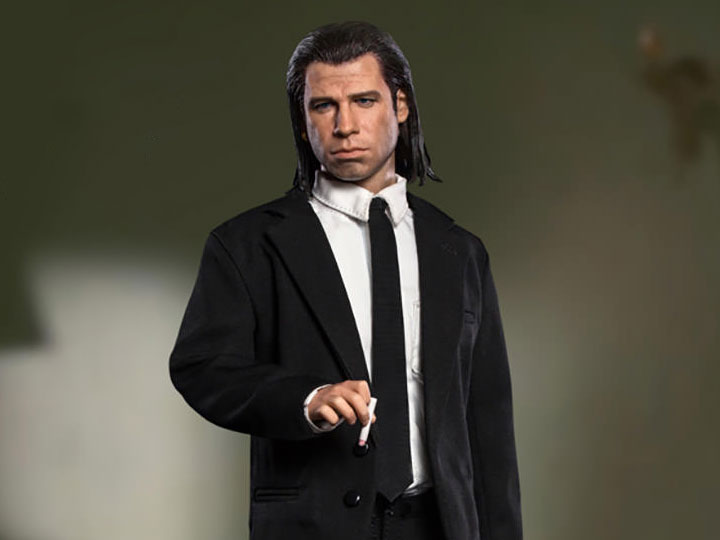
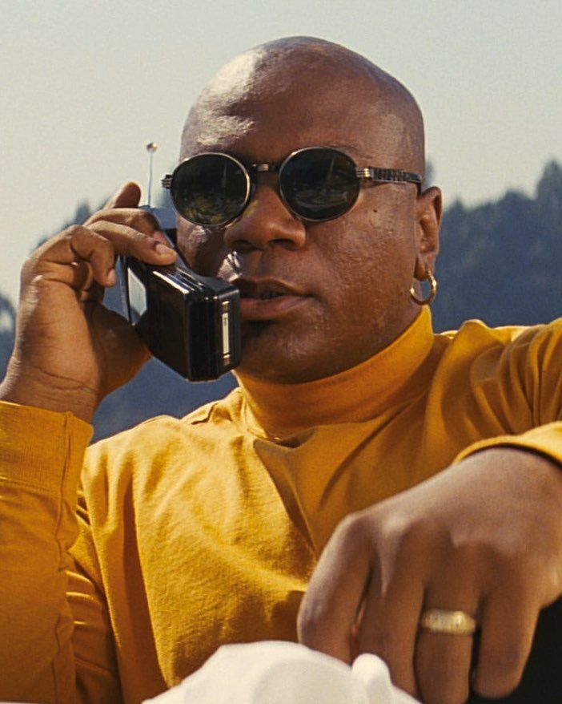

Mia is Marsellus's wife, and for that reason is one of the most potentially dangerous characters for Vincent to interact with in the entire film. Mia is a failed actress who was in a television pilot named "Fox Force Five" that never made it to air. She has a cocaine addiction that causes her much strife later in the film.

Vincent Vega
Vincent Vega is a heroin addict who, like Jules, is an associate of Marsellus Wallace's. Despite being an addict and a murderer, Vincent can also be likable and sensitive, such as when he explains to Jules the finer qualities of a foot massage, or when he mobilizes to save Mia's life. Vincent can also be prickly and defensive, such as when he spars with Butch at the bar, or chafes at Winston Wolfe's workmanlike demeanor.
Jules Winnfield is a remorseless killer, a hitman for the crime-lord Marsellus Wallace. Jules never eats pork, and invokes the Bible before performing executions. Jules's cool disposition is occasionally ruffled by his partner Vincent Vega, with whom he quarrels about issues both small and large. After Jules is miraculously spared by a hail of bullets, an act he considers "divine intervention," he reconsiders his life of crime.
Marsellus Wallace
Marsellus Wallace is a drug dealer who is the central node connecting every character in the film. Marsellus's face is not shown until more than halfway through the movie. Intelligent and powerful, Marsellus is feared by everyone, especially Vincent, who must race to save Mia's life lest Marsellus order his execution.